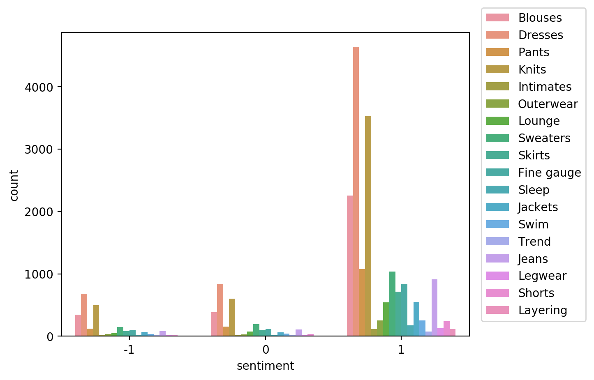
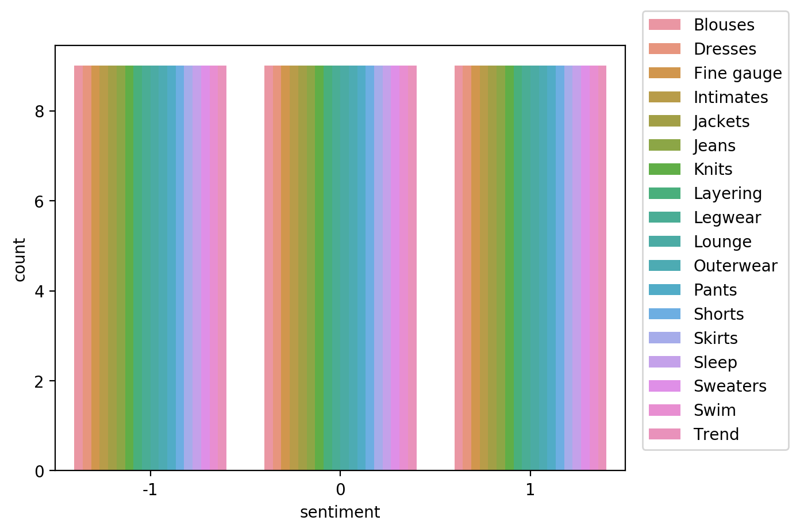

import boto3
import sagemaker
import pandas as pd
import numpy as np
import botocore
config = botocore.config.Config(user_agent_extra='dlai-pds/c1/w2')
# low-level service client of the boto3 session
sm = boto3.client(service_name='sagemaker',
config=config)
sess = sagemaker.Session(sagemaker_client=sm)
bucket = sess.default_bucket()
role = sagemaker.get_execution_role()
region = sess.boto_region_name1 Introduction
In Data Science and machine learning, bias can be present in data before any model training occurs. Inspecting a dataset for bias can help detect collection gaps, inform your feature engineering, and understand biases the dataset may reflect. In this article we will analyze bias on a dataset, generate and analyze bias reports, and prepare the dataset for the model training.
2 Setup AWS Sagemaker
In an earlier article we introduced AWS cloud services for data science, and how it can help with different stages of the data science & machine learning workflow.

In this project, we will be using AWS Sagemaker Clarify to explore the bias in a dataset.
Let’s now set up AWS sagemaker for this new project.
import matplotlib.pyplot as plt
%matplotlib inline
%config InlineBackend.figure_format='retina'3 Analyze the dataset
As with our earlier article using AWS we will be using the Women’s Clothing Reviews a public dataset available on kaggle.
It is shared in a public Amazon S3 bucket, and is available as a comma-separated value (CSV) text format:
3.1 Create a pandas data frame from the CSV file
Let’s create a pandas dataframe from each of the product categories and concatenate them into one.
!aws s3 cp 's3://dlai-practical-data-science/data/transformed/womens_clothing_ecommerce_reviews_transformed.csv' ./download: s3://dlai-practical-data-science/data/transformed/womens_clothing_ecommerce_reviews_transformed.csv to ./womens_clothing_ecommerce_reviews_transformed.csvpath = './womens_clothing_ecommerce_reviews_transformed.csv'
df = pd.read_csv(path)
df.head()| sentiment | review_body | product_category | |
|---|---|---|---|
| 0 | 1 | If this product was in petite i would get the... | Blouses |
| 1 | 1 | Love this dress! it's sooo pretty. i happene... | Dresses |
| 2 | 0 | I had such high hopes for this dress and reall... | Dresses |
| 3 | 1 | I love love love this jumpsuit. it's fun fl... | Pants |
| 4 | 1 | This shirt is very flattering to all due to th... | Blouses |
As we saw in the earlier article, there are way more positive reviews than negative or neutral. Such a dataset is called unbalanced.
In this case, using a relatively small data subset we could visualize the occurring unbalances. At scale, we would need to perform bias analysis. Let’s use this dataset as an example.
import seaborn as sns
sns.countplot(data=df, x='sentiment', hue='product_category')
plt.legend(loc='upper right',bbox_to_anchor=(1.3, 1.1))<matplotlib.legend.Legend at 0x7fc9f6a32090>
3.2 Upload the dataset to S3 bucket
Now we will upload the dataset to a private S3 bucket in a folder called bias/unbalanced.
data_s3_uri_unbalanced = sess.upload_data(bucket=bucket,
key_prefix='bias/unbalanced',
path='./womens_clothing_ecommerce_reviews_transformed.csv')
data_s3_uri_unbalanced's3://sagemaker-us-east-1-763519884484/bias/unbalanced/womens_clothing_ecommerce_reviews_transformed.csv'4 Analyze class imbalance on the dataset with Amazon SageMaker Clarify
Let’s analyze bias in sentiment with respect to the product_category facet on the dataset.
4.1 Configure a DataConfig
Information about the input data needs to be provided to the processor. This can be done with the DataConfig of the Clarify container. It stores information about the dataset to be analyzed, for example the dataset file, its format, headers and labels.
We can use DataConfig to configure the target column ('sentiment' label), data input (data_s3_uri_unbalanced) and output paths (bias_report_unbalanced_output_path) with their formats (header names and the dataset type):
from sagemaker import clarify
bias_report_unbalanced_output_path = 's3://{}/bias/generated_bias_report/unbalanced'.format(bucket)
data_config_unbalanced = clarify.DataConfig(
s3_data_input_path=data_s3_uri_unbalanced,
s3_output_path=bias_report_unbalanced_output_path,
label='sentiment',
headers=df.columns.to_list(),
dataset_type='text/csv'
)4.2 Configure BiasConfig
Bias is measured by calculating a metric and comparing it across groups. To compute it, we will specify the required information in the BiasConfig API. SageMaker Clarify needs the sensitive columns (facet_name) and the desirable outcomes (label_values_or_threshold). Here product_category is the sensitive facet and the desired outcome is with the sentiment==1.
SageMaker Clarify can handle both categorical and continuous data for label_values_or_threshold. In this case we are using categorical data.
bias_config_unbalanced = clarify.BiasConfig(
label_values_or_threshold=[1], # desired sentiment
facet_name='product_category' # sensitive column (facet)
)4.3 Configure Amazon SageMaker Clarify as a processing job
Now we need to construct an object called SageMakerClarifyProcessor. This allows you to scale the process of data bias detection using two parameters, instance_count and instance_type.
Instance_count represents how many nodes you want in the distributor cluster during the data detection. Instance_type specifies the processing capability (compute capacity, memory capacity) available for each one of those nodes.
clarify_processor_unbalanced = clarify.SageMakerClarifyProcessor(role=role,
instance_count=1,
instance_type='ml.m5.large',
sagemaker_session=sess)4.4 Run the Amazon SageMaker Clarify processing job
Let’s run the configured processing job to compute the requested bias methods of the input data.
We will apply the run_pre_training_bias method to the configured Clarify processor, passing the configured input/output data (data_config_unbalanced), configuration of sensitive groups (bias_config_unbalanced) with the other job setup parameters.
clarify_processor_unbalanced.run_pre_training_bias(
data_config=data_config_unbalanced,
data_bias_config=bias_config_unbalanced,
methods=["CI", "DPL", "KL", "JS", "LP", "TVD", "KS"],
wait=False,
logs=False
)
Job Name: Clarify-Pretraining-Bias-2023-02-04-18-19-13-642
Inputs: [{'InputName': 'dataset', 'AppManaged': False, 'S3Input': {'S3Uri': 's3://sagemaker-us-east-1-763519884484/bias/unbalanced/womens_clothing_ecommerce_reviews_transformed.csv', 'LocalPath': '/opt/ml/processing/input/data', 'S3DataType': 'S3Prefix', 'S3InputMode': 'File', 'S3DataDistributionType': 'FullyReplicated', 'S3CompressionType': 'None'}}, {'InputName': 'analysis_config', 'AppManaged': False, 'S3Input': {'S3Uri': 's3://sagemaker-us-east-1-763519884484/bias/generated_bias_report/unbalanced/analysis_config.json', 'LocalPath': '/opt/ml/processing/input/config', 'S3DataType': 'S3Prefix', 'S3InputMode': 'File', 'S3DataDistributionType': 'FullyReplicated', 'S3CompressionType': 'None'}}]
Outputs: [{'OutputName': 'analysis_result', 'AppManaged': False, 'S3Output': {'S3Uri': 's3://sagemaker-us-east-1-763519884484/bias/generated_bias_report/unbalanced', 'LocalPath': '/opt/ml/processing/output', 'S3UploadMode': 'EndOfJob'}}]run_unbalanced_bias_processing_job_name = clarify_processor_unbalanced.latest_job.job_name
print(run_unbalanced_bias_processing_job_name)Clarify-Pretraining-Bias-2023-02-04-18-19-13-6424.5 Run the Amazon SageMaker Clarify processing job on the unbalanced dataset
running_processor = sagemaker.processing.ProcessingJob.from_processing_name(processing_job_name=run_unbalanced_bias_processing_job_name,
sagemaker_session=sess)%%time
running_processor.wait(logs=False).............................................................................!CPU times: user 304 ms, sys: 55.6 ms, total: 360 ms
Wall time: 6min 30s4.6 Analyze unbalanced bias report
In this run, we analyzed bias for sentiment relative to the product_category for the unbalanced data. Let’s have a look at the bias report.
List the files in the output path bias_report_unbalanced_output_path:
!aws s3 ls $bias_report_unbalanced_output_path/2023-02-04 18:25:39 31732 analysis.json
2023-02-04 18:19:14 346 analysis_config.json
2023-02-04 18:25:39 607108 report.html
2023-02-04 18:25:39 346473 report.ipynb
2023-02-04 18:25:39 326001 report.pdfDownload generated bias report from S3 bucket:
!aws s3 cp --recursive $bias_report_unbalanced_output_path ./generated_bias_report/unbalanced/download: s3://sagemaker-us-east-1-763519884484/bias/generated_bias_report/unbalanced/analysis_config.json to generated_bias_report/unbalanced/analysis_config.json
download: s3://sagemaker-us-east-1-763519884484/bias/generated_bias_report/unbalanced/analysis.json to generated_bias_report/unbalanced/analysis.json
download: s3://sagemaker-us-east-1-763519884484/bias/generated_bias_report/unbalanced/report.pdf to generated_bias_report/unbalanced/report.pdf
download: s3://sagemaker-us-east-1-763519884484/bias/generated_bias_report/unbalanced/report.ipynb to generated_bias_report/unbalanced/report.ipynb
download: s3://sagemaker-us-east-1-763519884484/bias/generated_bias_report/unbalanced/report.html to generated_bias_report/unbalanced/report.htmlYou can view the bias report here.
The bias report shows a number of metrics, but here we will focus on just two of them: - Class Imbalance (CI). Measures the imbalance in the number of members between different facet values. Answers the question, does a product_category have disproportionately more reviews than others? Values of CI will become equal for even distribution between facets. Here, different CI values show the existence of imbalance. - Difference in Positive Proportions in Labels (DPL). Measures the imbalance of positive outcomes between different facet values. Answers the question, does a product_category have disproportionately higher ratings than others? With the range over the interval from -1 to 1, if there is no bias, you want to see this value as close as possible to zero. Here, non-zero values indicate the imbalances.
5 Balance the dataset by product_category and sentiment
Let’s balance the dataset by product_category and sentiment. Then we can configure and run SageMaker Clarify processing job to analyze the bias of it. Which metrics values do we expect to see in the bias report?
df_grouped_by = df.groupby(['product_category', 'sentiment'])
df_balanced = df_grouped_by.apply(lambda x: x.sample(df_grouped_by.size().min()).reset_index(drop=True))df_balanced| sentiment | review_body | product_category | |||
|---|---|---|---|---|---|
| product_category | sentiment | ||||
| Blouses | -1 | 0 | -1 | I bought this top in the store which was good... | Blouses |
| 1 | -1 | Wow this is huge! i'm all for the tent-look wi... | Blouses | ||
| 2 | -1 | If you have anything larger than an a cup thi... | Blouses | ||
| 3 | -1 | Like another reviewer mentioned this shirt is... | Blouses | ||
| 4 | -1 | I did not like this top at all-but had i looke... | Blouses | ||
| ... | ... | ... | ... | ... | ... |
| Trend | 1 | 4 | 1 | Never spent this much on a dress so it needs t... | Trend |
| 5 | 1 | I love this sweatshirt! i truly did not pay mu... | Trend | ||
| 6 | 1 | I am waist-challenged. i like a narrowly cut s... | Trend | ||
| 7 | 1 | I love the style and look oft this blouse but ... | Trend | ||
| 8 | 1 | I love this top it is a cool style mix betwee... | Trend |
486 rows × 3 columns
Let’s now visualize the distribution of review sentiment in the balanced dataset.
import seaborn as sns
sns.countplot(data=df_balanced, x='sentiment', hue='product_category')
plt.legend(loc='upper right',bbox_to_anchor=(1.3, 1.1))<matplotlib.legend.Legend at 0x7fc9f52ca4d0>
6 Analyze bias on balanced dataset with AWS SageMaker Clarify
Let’s now analyze bias in sentiment with respect to the product_category facet on the balanced dataset.
We need to save and upload the balanced data to the S3 bucket.
path_balanced = './womens_clothing_ecommerce_reviews_balanced.csv'
df_balanced.to_csv(path_balanced, index=False, header=True)
data_s3_uri_balanced = sess.upload_data(bucket=bucket, key_prefix='bias/balanced', path=path_balanced)
data_s3_uri_balanced's3://sagemaker-us-east-1-763519884484/bias/balanced/womens_clothing_ecommerce_reviews_balanced.csv'6.1 Configure a DataConfig
We need to configure a DataConfig for Clarify to analyze bias on the balanced dataset. To do this we pass the S3 object path containing the balanced dataset, the path to store the output (bias_report_balanced_output_path) and the target column.
from sagemaker import clarify
bias_report_balanced_output_path = 's3://{}/bias/generated_bias_report/balanced'.format(bucket)
data_config_balanced = clarify.DataConfig(
s3_data_input_path=data_s3_uri_balanced,
s3_output_path=bias_report_balanced_output_path,
label='sentiment',
headers=df_balanced.columns.to_list(),
dataset_type='text/csv'
)6.2 Configure BiasConfig
BiasConfig for the balanced dataset will have the same settings as before.
bias_config_balanced = clarify.BiasConfig(
label_values_or_threshold=[1], # desired sentiment
facet_name='product_category' # sensitive column (facet)
)6.3 Configure SageMaker Clarify as a processing job
SageMakerClarifyProcessor object will also have the same parameters.
clarify_processor_balanced = clarify.SageMakerClarifyProcessor(role=role,
instance_count=1,
instance_type='ml.m5.large',
sagemaker_session=sess)6.4 Run the Amazon SageMaker Clarify processing job
Let’s run the configured processing job for the balanced dataset.
We will apply the run_pre_training_bias method to the configured Clarify processor, passing the input/output data, configuration of sensitive groups with the other job setup parameters.
clarify_processor_balanced.run_pre_training_bias(
data_config=data_config_balanced,
data_bias_config=bias_config_balanced,
methods=["CI", "DPL", "KL", "JS", "LP", "TVD", "KS"],
wait=False,
logs=False
)
Job Name: Clarify-Pretraining-Bias-2023-02-04-18-25-47-825
Inputs: [{'InputName': 'dataset', 'AppManaged': False, 'S3Input': {'S3Uri': 's3://sagemaker-us-east-1-763519884484/bias/balanced/womens_clothing_ecommerce_reviews_balanced.csv', 'LocalPath': '/opt/ml/processing/input/data', 'S3DataType': 'S3Prefix', 'S3InputMode': 'File', 'S3DataDistributionType': 'FullyReplicated', 'S3CompressionType': 'None'}}, {'InputName': 'analysis_config', 'AppManaged': False, 'S3Input': {'S3Uri': 's3://sagemaker-us-east-1-763519884484/bias/generated_bias_report/balanced/analysis_config.json', 'LocalPath': '/opt/ml/processing/input/config', 'S3DataType': 'S3Prefix', 'S3InputMode': 'File', 'S3DataDistributionType': 'FullyReplicated', 'S3CompressionType': 'None'}}]
Outputs: [{'OutputName': 'analysis_result', 'AppManaged': False, 'S3Output': {'S3Uri': 's3://sagemaker-us-east-1-763519884484/bias/generated_bias_report/balanced', 'LocalPath': '/opt/ml/processing/output', 'S3UploadMode': 'EndOfJob'}}]run_balanced_bias_processing_job_name = clarify_processor_balanced.latest_job.job_name
print(run_balanced_bias_processing_job_name)Clarify-Pretraining-Bias-2023-02-04-18-25-47-825running_processor = sagemaker.processing.ProcessingJob.from_processing_name(processing_job_name=run_balanced_bias_processing_job_name,
sagemaker_session=sess)%%time
running_processor.wait(logs=False)...........................................................................!CPU times: user 312 ms, sys: 46.6 ms, total: 359 ms
Wall time: 6min 20s6.5 Analyze balanced bias report
Let’s see again the files created by the report.
!aws s3 ls $bias_report_balanced_output_path/2023-02-04 18:32:02 29889 analysis.json
2023-02-04 18:25:48 346 analysis_config.json
2023-02-04 18:32:02 592454 report.html
2023-02-04 18:32:02 331819 report.ipynb
2023-02-04 18:32:02 320692 report.pdfWe can view the report here.
In this run, we analyzed bias for sentiment relative to the product_category for the balanced data. Note that the Class Imbalance (CI) metric is equal across all product categories for the target label, sentiment. And Difference in Positive Proportions in Labels (DPL) metric values are zero.
7 Acknowledgements
I’d like to express my thanks to the great Deep Learning AI Practical Data Science on AWS Specialisation Course which i completed, and acknowledge the use of some images and other materials from the training course in this article.